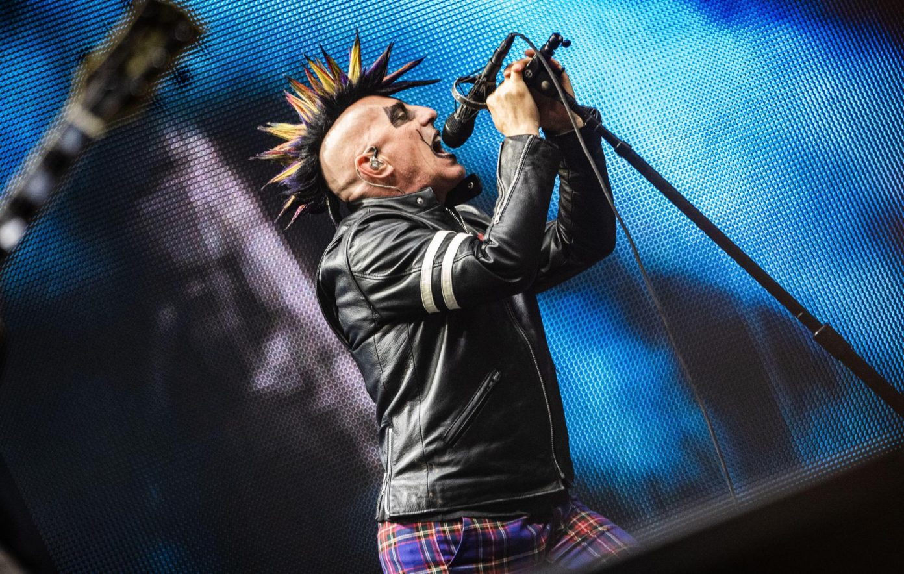

Tool - Bio
Links
HOME
Bio
Discography
Listen
Band Members
Maynard James Keenan - vocals (1990–present)

Adam Jones - guitars (1990–present)
Danny Carey - drums, percussion (1990–present), samples (1995–present)
Justin Chancellor - bass (1995–present)